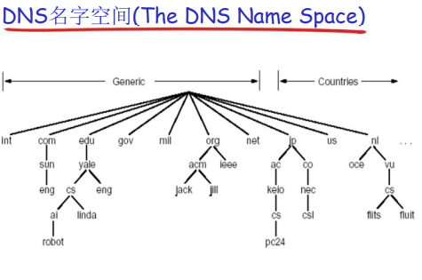

DNS
在浏览器中往往输入的是服务器的域名，很少输入IP地址来访问域名。
IP地址人们往往很难记忆，对名称的记忆更容易。
这就存在域名与IP地址的映射了。
域名转化成IP地址的过程需要DNS服务器进行解析。
而在编码是常用gethostbyname()函数来解析
我们的计算机上有DNS客户端向DNS服务器发送服务请求
生成查询消息
向DNS服务器发送查询消息
交给UDP来传输到目标服务器
DNS服务器根据查询消息返回响应消息
DNS使用的是53端口
假设离主机最近的DNS服务器，主机查询的名字在该区域内部和在缓存中，那么本地DNS服务器就直接返回信息
DNS服务器有缓存功能，可以记住之前查询过的域名。一般存活时间为2天
一台DNS服务器不可能包含所有的信息。
一台DNS服务器可以管理多个域的信息
DNS服务器中的所有信息都是按照域名以分层次的结构来保存的。顶级域(TLD)服务器

一个域名为www.example.com。该域名下可以分配子域，比如www.sub1.example.com; www.sub2.example.com.但是需要www.example.com域同意。
当本地DNS服务器中没有时，就需要向根DNS服务器进行查询。查询方式有两种。
递归查询：向根服务器查询，让根服务器找到后在返回域名信息

迭代查询：向根服务器查询，根服务器则告诉你，你应该找谁，以此循环

本博客所有文章除特别声明外，均采用 CC BY-SA 4.0 协议 ，转载请注明出处！